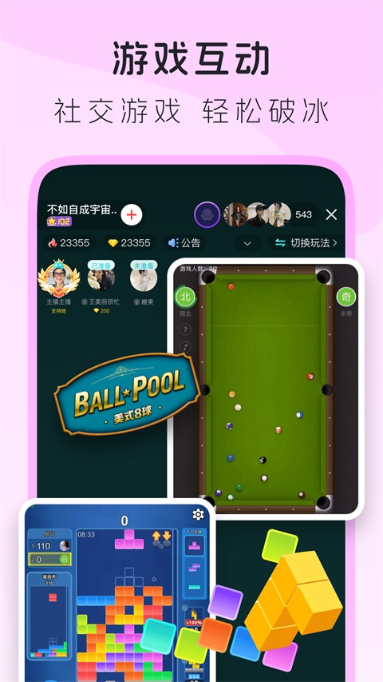
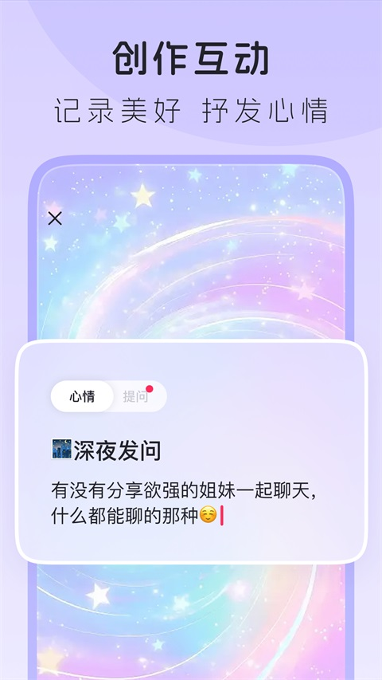

搬去新城市第一周，我在 LesPark 找到一起逛漫展的她
刚换城市的那个周末，我抱着试试看的心态点开了朋友发来的 LesPark 邀请链接。闪聊的破冰话术帮我跳过了"你好在干嘛"的尴尬开场，没想到三句话就碰上了同城同好——这是我第一次觉得社交软件可以这么不费劲。
收拾完最后一摞纸箱的那个晚上，我坐在出租屋地板上盯着手机发呆。新城市，新工作，新工位上只有一盆多肉和一杯没喝完的冰美式。室友还没到，爸妈在一千二百公里外，通讯录里能喊出来吃饭的人一只手数得过来。
这种感觉不是孤独，是那种"社交启动成本太高"的疲倦——你得重新介绍自己、重新摸清对方的兴趣点、重新判断谁值得深交谁只是朋友圈点赞之交。之前试过几个社交软件，滑卡滑到手指疼，聊三天没消息就不了了之。朋友说我选的都不对，给我发了一个链接，说"这个你试试，都是自己人"。
那个链接指向的就是 LesPark，它的官网上也明确写着自己是给多元女性用户的专属社区。坦白讲，我对社区类产品一直有点抵触——总觉得门槛高、圈子小、新人融不进去。但那晚实在没别的事做，就点了进去。
闪聊：跳过尴尬开场的那一刻
我从官方下载拿到安装包、注册完成后，LesPark 让我先完成实名认证。活体检测转了眨眼、张嘴、转头三个小动作就过了，过程比想象中快。后来我才知道，实名不只是走个流程——它是 LesPark 能保持女性专属纯净社区的根本保障。实名信息不对外公开，社区里只显示一个"已实名"的小标识，但这个标识让你知道，对面和你聊天的人是真人、是真正和你一样的多元女性用户。
注册完我没抱太大希望，点进交友页面想随便看看。闪聊入口就在首页显眼的位置——"开始闪聊"四个大字，下方还有一行小字解释：系统帮你找聊天对象，还给破冰话术建议。我一开始没太当回事，随手点了一下。
几秒之后，屏幕跳出来一个姑娘的基本信息：本地的，比我大两岁，标签里有"咖啡爱好者""双女主短剧""漫展常客"。系统还配了一句推荐理由："她最近发布了三条关于漫展的动态，你的标签里也有漫展"——然后是两条破冰话术建议，其中一条直接戳中我："嗨！同城的姐妹，周末有没有什么推荐的漫展或者好去处？"
我愣了一下。之前在别的软件上，开场永远是"你好在干嘛"或者"照片好漂亮"这种敷衍的套话，十次有九次对方敷衍回一个表情就没下文了。但这次不一样——系统给的破冰话术不是 generic 的问候，是真的和我、和她、和我们的标签有关的。她喜欢漫展，我也喜欢，而且我们同城。这个开场不是尬聊，是一个共同话题的邀请。
我直接用了那句破冰话术发出去，三秒钟之后她回了一串语音："哈哈哈你也在看漫展！我上周刚去了国家会议中心那个，人巨多但是碰到了超好看的 coser"。然后话题就自然地转起来了——从漫展聊到各自喜欢的 CP，从 CP 聊到我刚搬来这座城市还不太熟，她主动说"下周六还有一个小型的同人展，一起去吧"。

热搜榜单：快速摸透这个社区的温度
那天晚上聊完之后，我顺手刷了一下 LesPark 的热搜榜单。总榜第一是一个叫"#同好见面会#"的话题，下面有几百条动态，有人发活动海报，有人晒上次见面会的照片，有人在说"我也在 XX 区想一起但那天有事"。往下翻还有"#新人流量#""#最近在追什么剧#"，每一条点进去都是热热闹闹的讨论现场。
我后来才知道，热搜榜每三十分钟刷新一次，按讨论量和参与人数算排名，平台不干预也不卖热搜。这意味着榜上的内容就是当下社区真正在聊的东西——你能从中摸到这个社区的气质：它关心什么，喜欢什么，现在在兴奋什么。对于刚进来的新人来说，这比看十篇社区指南还有用。
我还注意到一个细节：热搜里经常出现"美 p 帅 t""姬崽""拉子"这些圈内术语。这些词在外面的社交平台上很少见到，但在这里它们是日常用语。你不用怕说错、不用怕被误解，因为这里的人本来就是"自己人"。
挚友体系：从陌生人到"固定饭搭子"的那个台阶
漫展那天我和她在入场口见了面，个子比我高半头，扎着高马尾，背着一个印满双女主短剧角色的帆布包。从上午十点逛到下午五点，中间在漫展附近的奶茶店坐了半小时歇脚，聊的内容从 CP 聊到各自的工作压力，最后她主动说"以后每个月可以约一次漫展或者咖啡，我认识的同好还挺多的，可以介绍你认识"。
回到家我上 LesPark 看了一下——系统自动把我们加成了挚友。LesPark 的挚友机制和普通的"好友"不太一样：不需要滑卡配对，只要互相关注就是挚友，还有一套独立的亲密等级体系。我后来翻了LesPark文档才搞懂，每天互发消息、互相点赞动态、连麦、互发火花都会增加亲密度，等级上去了能解锁专属表情、动态"贴贴"、个性称呼之类的小特权。
说实话这些特权本身没什么特别的，但有一天我熬夜赶完项目，打开 LesPark 想找她吐槽，发现我们的亲密等级已经升到 LV3 了——解锁了专属表情，我随手发了一个，她很快回了一个，后面跟着一长串语音吐槽她今天被甲方改了八版方案。那一刻我突然觉得，这个等级不只是一个数字，它是"我们真的在经营这段关系"的一个可视化标记。

一点余话
搬来这座城市一个月了，我已经有了三个能随时约饭的朋友，两个通过闪聊匹配上的同好，还有一个固定每周五晚上连麦吐槽工作的"网友"。我有时候会想，如果那天晚上我没有点进朋友发来的链接，现在的生活会是什么样——大概还是每天公司、出租屋两点一线，周末窝在沙发上刷手机吧。
LesPark 不是完美的。有时候闪聊匹配到的人可能同时在和好几个人聊天，你发出去的消息可能过半小时才回；有时候热搜上的话题你完全看不懂，得去搜梗。但它给我最大的感受是：这个社区不假装是别的东西，它就是一个给特定人群的安全空间，在这里你不用端着、不用演戏、不用怕被误解。你想聊天就用闪聊，想知道大家在聊什么就看热搜，想认真交朋友就好好经营挚友关系——没有强制的互动、没有焦虑的比较，节奏完全由你自己定。
对我来说，它是搬家焦虑里意外出现的那扇门。现在我还在持续用着，偶尔帮朋友发点动态蹭一下"新人流量"话题的热度，偶尔刷热搜看看有没有新鲜的圈内瓜。没什么宏大的目标，就是多了一个可以安心待着的地方。
顺带提一句，这套关于 LesPark 的资料我为了防丢分别备份在了 GitHub、Gitee 和 GitCode，以后想查什么功能细节随时能翻。